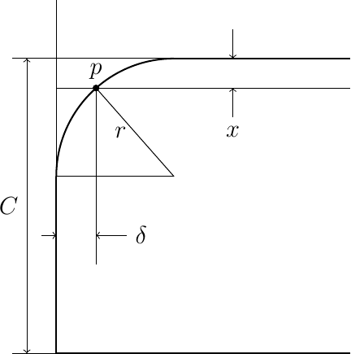

Read time: 4.2 minutes (421 words)
Tip Covering Logic¶
Covering the center section of the wing and stab is a snap. That covering is actually a simple slice out of a very thin cylinder since we are using circular arc airfoils. I chose the generate the points on a grid that covers the center section and use the FUnction Grapher logic created by Justin lin to generate the actual covering shape.
The tips are another matter. If we keep the outer ribs of the center section vertical and raise the wing tip up to form the dihedral, the inner edge of the tip covering is not a straight line. Mathematically, it is a piece of an ellipse formed by cutting a cylinder with an angled plane. We can extract the coordinates of the outer edge of the center section covering and use those points as our starting point for the tip covering. However, we need to account for the dihedral angle we will be using and adjust those points to find the correct starting points for the tip covering. (Remember, there is no actual rib here.
This is not going to be too hard if we make one simple assumption.
Tip Airfoil¶
The tip has no ribs, only the tip outline as a structure. If we cover an actual model with this structure, something modelers typically do by building the wing flat, then the covering assumes some shape other than out circular arc as we move toward the tip. The actual height of this shape tapers off to zero as we approach the tip.
Here is a basic diagram showing the tip design:

In this figure, we are going to pick points on the outer part of the tip, along the arc and the outer tip rib, that represent the intersection of a vertical plane parallel to the Y axis drawn from the inner tip rib points to the outer tip structure. We calculate the Y offset of the tip at the intersection (\(\delta\) in the figure above) and draw a straight 3D line between the inner point and this outer tip structure. We will distribute points along this line using the number of points selected in the Y direction for our grid.
We are generating the grid for our covering using evenly distributed points along the span and chord. In that code x, and y range from zero to one and must be scaled to determine physical values.
The equations needed for calculating the coordinates of our tip grid point (point p in the figure) are given here:
We can determine \(\delta\) using the equation of the circular arc centered as shown in the figure:
And here is an image showing the grid on the wing tip: